Learn by doing · Pro
From offline suggestions to AI-assisted coding
Start with fast table-based suggestions that cost nothing per request. Then set up the Assistant, ask for online alternatives, try an on-device model, and finish with focused AI Prompt cells that explain your code.
This guide covers Pro 1.4.0 completion features and a separately marked, unreleased execution-consent update. The pictures are real browser or Galaxy S24+ Android captures; the existing execution-settings picture predates that update, and none shows its new approval dialogs or proves Play delivery or phone performance. The custom-model picture is a separate, newer browser capture. Local-model figures below come from earlier native-engine measurements; installation and layout can differ with your app version.
Check your version. The execution changes in the appendix are planned for proposed Pro 1.5.0, which is unreleased; the final release number may change. In Pro 1.4.0, Open can run allowed kernels without asking. In the upcoming version, Open asks before Assistant cell execution by default. Keep Kernels… → JavaScript → Ask for this exercise on either version. Offline tables, on-tap API completion, the separate completion model and the Android local model are already 1.4.0 features.
“Free” here means no API charge. Table suggestions and the on-device model do not bill a provider. That does not make them Free-edition features: this walkthrough is for SciREPL Pro. Online requests use your own provider account and can cost money.
Step 1 · No API key needed
Start with offline table suggestions
Find ☰ Menu in the app's header: it is the button with three horizontal lines. Open Completion. Its Section picker separates General, AI suggestions (online), and Local model (on device). Begin with General.
- Set Local code completion → On. The default Auto (desktop on, touch off) would otherwise leave it off on a phone.
- Set Suggestion chips → On and keep Suggestions → At cursor. To isolate the tables, set AI suggestions → Off in the online section and Use local model → Off in the local section, if either was previously enabled. Return to General.
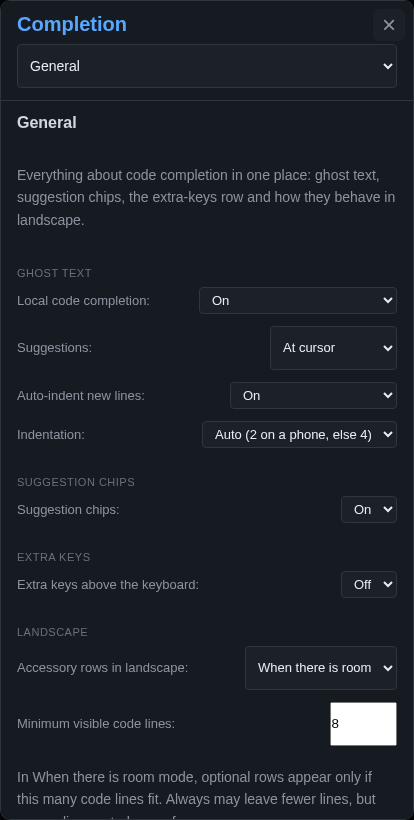
- Close Completion. In a new practice workbook, choose a Code cell and the JavaScript language. Type
cons, with the caret at the end and no selection. Look forconst. - In the screenshot below,
consis followed by a faintt—in-line ghost text. Tap Accept or press Tab to insert the suggestion, givingconst. If aconstchip appears instead, tapping it is another way to accept that candidate. Finish the line yourself, for exampleconst values = [12, 15, 18];.
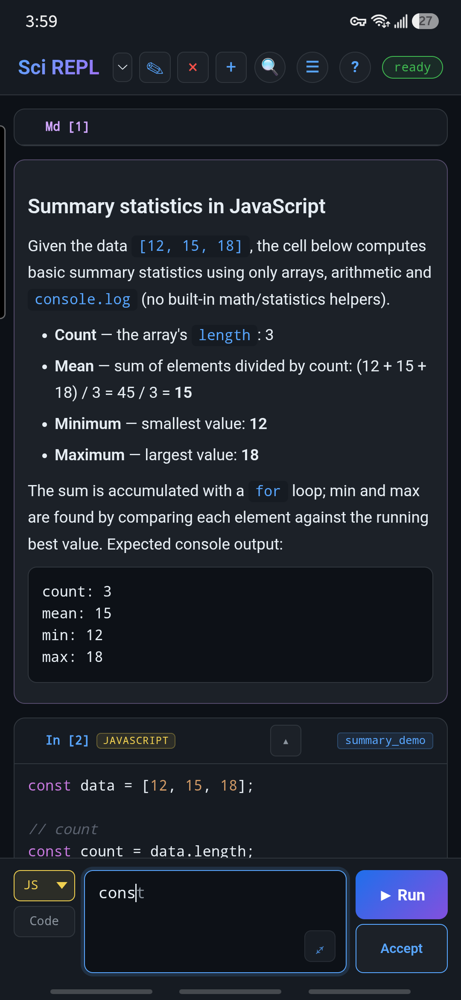
const for cons: the faint t is ghost text, with Accept visible and chips enabled. The API and local model are off. The extra-key row is hidden here to contrast with the next picture; it is a separate optional control, not a requirement for completion.See the two offline displays on a phone. Leave Suggestion chips → On, choose Python, and type pri. The faint nt after the caret offers print; it is not part of your source until you accept it. You do not need to turn chips off to see ghost text. A single candidate can appear as a ghost, while chips offer a choice when several candidates fit. Keep AI suggestions and Use local model off for both examples.
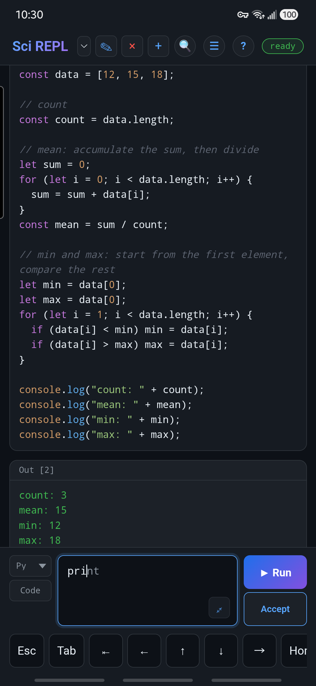
With chips still On, replace the practice input with these three lines, leaving the caret after the unfinished sample_m. The row offers sample_mean and sample_median from names in your own source. Tap a chip to choose a candidate; unlike ghost text, the row shows alternatives.
sample_mean = 0
sample_median = 0
sample_m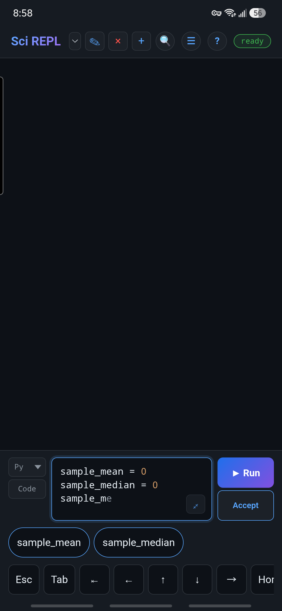
The extra-key row visible in the Python phone pictures and syntax colours while typing are separate, optional Pro controls. See Appearance walkthrough: extra keys and syntax colours to turn either on or off, and to find the file editor's separate highlighting checkbox.
These prefixes demonstrate editing only—there is no need to Run them. After trying the displays, switch back to JavaScript for the example above and leave chips on for the rest of the lesson.
Offline suggestions combine curated names with local code information. In Python, that includes variables and functions found in workbook code and cached kernel names and object attributes, including methods. Frequency and acceptance history help rank them. Other languages have different coverage: static lists, unrun definitions or stale snapshots may suggest a name that is not currently available in scope. This layer is not a language model and does not reason about your whole task.
Accept is not Run. Accepting a suggestion edits the source; it does not execute the cell. Review it, then use that editor's Run button. With only the offline table layer enabled, typing a prefix does not send an API request or start a language runtime just to make suggestions.
Future online prefetch: an opt-in mode is planned that could send model requests while you type. It is not available yet, and no release number is assigned to it. The no-request statement above describes the current offline table layer, not this future mode.
End of cell only is an alternative if mid-cell suggestions distract you. A selection, string, comment, or half-split name may intentionally produce no suggestions. In short landscape, optional rows can disappear to keep room for code; see Appearance settings.
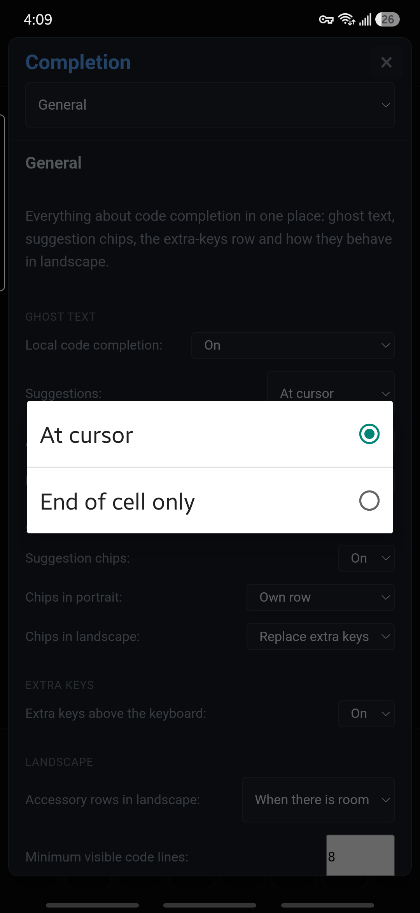
Step 2 · Online setup
Save an API key
An API key lets SciREPL use a provider account you control. Obtain the key from that provider, check its current prices and account limits, and use only a small practice workbook with non-private data for this lesson.
- Open Menu → 🤖 AI Assistant (Pro). Tap the panel's ⚙ gear to open AI Settings.
Can't see the gear? The keyboard can shift or scroll the Assistant panel. Drag the panel's contents downwards to scroll back towards its top and reveal the gear; dismissing the keyboard can also give you more room.
- Set Configure model for → AI Assistant. Choose a Backend (e.g. OpenRouter) and Model, and check the endpoint if your backend uses a configurable one.
- Enter the matching API Key. Use Saved keys to manage keys for other provider/endpoint pairs. A key for one destination is not automatically a key for another.
- Tap Save. Saving settings alone does not make a model request. Keep the panel open for the next step.
Keep the key out of the workbook. Do not paste it into a cell, prompt, screenshot or exported file. Saved keys stay in local app/browser storage, without application-level encryption; protect the device and do not run untrusted code. The Pro privacy policy explains what is stored and sent.
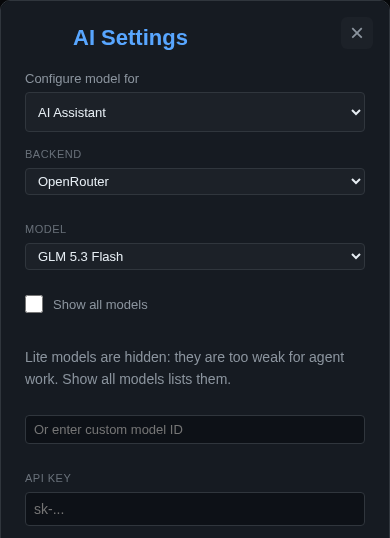
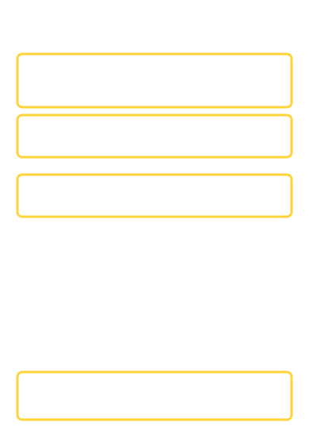
sk-… is a placeholder, not a saved key. Scroll farther down to reach Save; no key was entered or request sent for this picture.A low-cost, tool-capable model is a sensible starting point for the Assistant. Examples to compare include GLM 5.3 Flash, GPT-6 Luna, Claude Haiku 5.5, and DeepSeek V4 Flash. Exact model IDs, available versions, tool support and prices depend on your app version and provider; check the current picker and provider documentation. A newly announced model may need an app update before it appears. Later, you can choose a different inexpensive model just for completions.
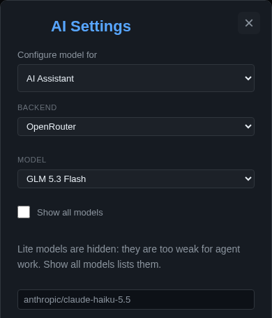
Step 3 · Deliberate tool use
Build a small example with the Open agent preset
Open is the second-most-permissive security preset, after Full control. It allows notebook edits by default, with fewer prompts than Cautious. Whether execution asks depends on your version and permission settings; see the upcoming execution-approval appendix. Use it deliberately in a practice workbook—not as a requirement for autocomplete.
- In AI Settings, select Security Level → Open and Agent writes → Active worksheet. Leave source browsing off and turn off Auto-run cells created by AI. Under Kernels…, set JavaScript → Ask, then save. This kernel rule still asks even if an execution-tool Allow was saved earlier.
Auto-run off is not an execution lock. It stops newly created cells from running automatically; it does not disable separate
execute_cellorrun_cellsrequests. Released Pro 1.4.0's Open default can allow them without asking. The upcoming Open default asks, but an explicit tool or kernel Allow can change that default. AI Settings → Kernels… → JavaScript → Ask keeps this exercise's JavaScript execution behind confirmation. Your own manual cell Run remains a separate action. Next-release execution controls are detailed in the appendix. - In the Assistant panel, choose This workbook. Leave Review, Remote, and Terminal off for this direct-provider example.
- Send the practice prompt in the callout below. The panel's Send already starts the agentic tool loop: there is no extra “Agent mode” toggle here. The full-screen editor's Agent button is a separate workflow.
Copy this prompt. Paste it into the Assistant's message box, not a code cell, then tap Send.
In this practice workbook, add a Markdown explanation followed by one JavaScript cell named summary_demo. Generate an input array of 10 pseudorandom integers from 1 to 20 inclusive. Use the Park-Miller generator with initial state 42. For each value, first update state = (16807 * state) % 2147483647; then append 1 + Math.floor(20 * state / 2147483647). Generate the array with this rule; do not hard-code its values or use Math.random. Reset state to 42 on each cell Run. Print the generated input array, then compute its count (array length), arithmetic mean, minimum and maximum. Print each result on its own labelled line with console.log. Use ordinary JavaScript arrays, arithmetic and Math.floor, with no packages. Do not run cells or change existing cells. Do not use files, storage, DOM APIs or network requests. Explain the expected results so I can review the code. - Read the proposed explanation and the new
summary_democell. Check that it generates the input using the stated rule and computes the summaries from that array. Run that cell yourself, then compare with the check below. The expected results are count 10, mean 9.3, minimum 1, maximum 20.
Before Send: the Assistant includes the selected conversation and a bounded preview of the current workbook's cells (up to the first 500 characters of each cell, plus metadata). Allowed tools can send more. Turning source browsing off does not stop workbook previews from being sent. That is different from the smaller current-cell payload used by completion below.
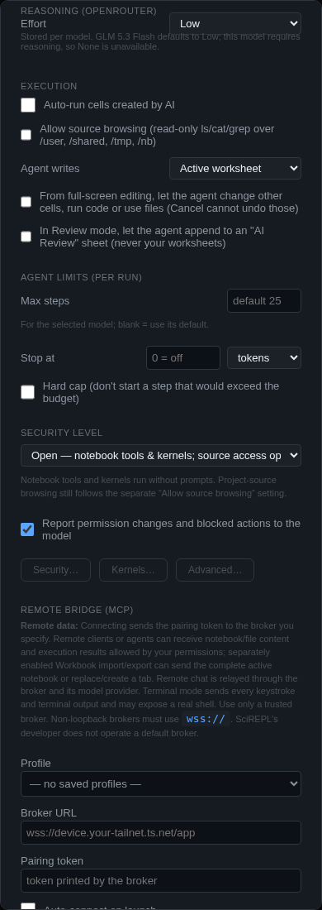
Paused with a Continue button? The agent may reach its configured step limit before finishing. Read what it has already done, then press Continue if the task is unfinished and you want another bounded run. Continuing can incur more API charges; it is not needed after Done.
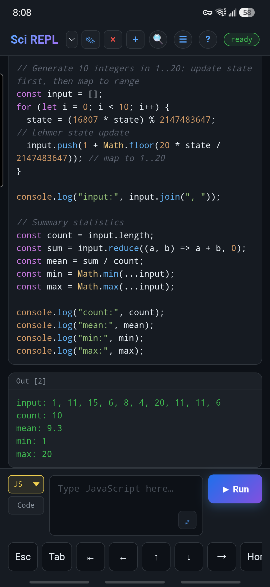
[12, 15, 18] and finished after two Continue presses. The code was inspected and run manually—not automatically by the agent—and produced count 3, mean 15, minimum 12 and maximum 18. This shows the workflow, not the output of the revised seeded exercise above.If you prefer more confirmation, use Cautious instead. Open still respects the separate source-browsing and write-scope controls; Full control bypasses those two coarse controls. Individual permissions and other safety gates still matter. Review is an additional read-mostly restriction, which would obstruct this cell-creation demonstration.
Step 4 · Request alternatives when you want them
Ask for API-based completions
- Open Menu → Completion, then choose Section → AI suggestions (online). Set AI suggestions → On tap.
- Keep Completion model → Follow AI Assistant to inherit its provider, endpoint and model. Or choose Choose provider and model, select a saved provider/endpoint and a low-cost model suited to short suggestions. No key is entered on this screen; Open AI Settings lets you add one first.
- Open this section's Advanced to inspect the reply timeout and spending guards. Defaults are 6 seconds, $0.25/day and $5/month. Check prices before increasing them.
- Return to a JavaScript editor and enter this practice snippet:
Leave the caret after the unfinishedconst values = [12, 15, 18]; const average =const average =line. Tap … at the end of the suggestion row, use the …AI extra key, or press Ctrl + Shift + Space. - Review the first request's actual payload and destination before sending it. AI chips carry a ✦ marker. Tap one to accept it; a truncated or multi-line chip opens a preview first. Review the resulting source before Run.
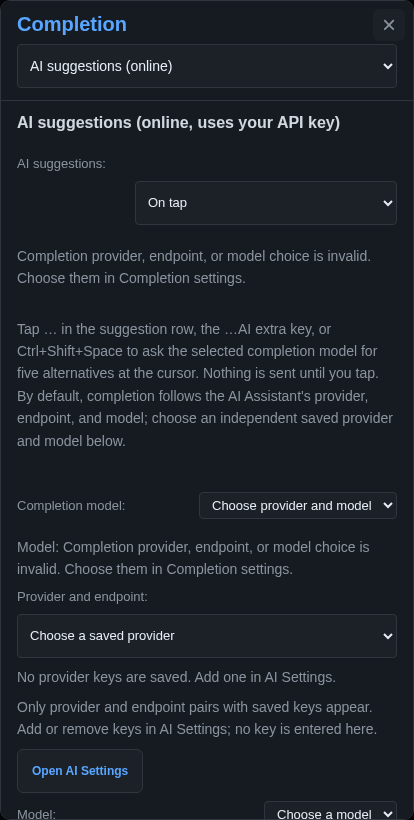
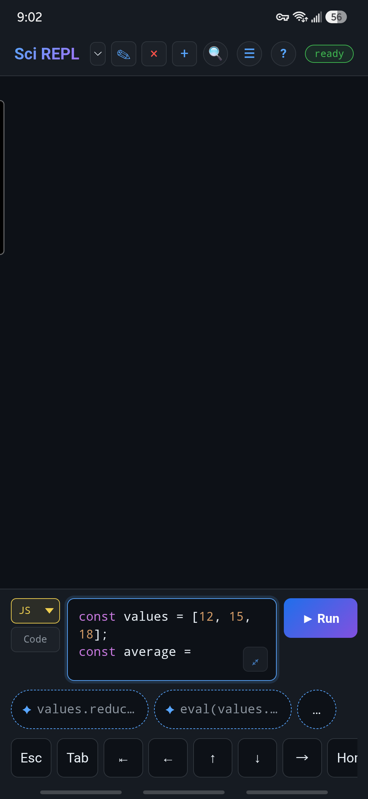
Choose the code, not just an AI chip. In this request, the first chip proposed values.reduce((a, b) => a + b, 0) / values.length;. Tap it to inspect the full preview: it sums the array and divides by its length, giving 15 for this example. The second proposed eval(values.join(' + ')) / values.length;. Reject that unnecessary eval alternative: calculating a mean does not need to turn a string into executable code. Check your own returned code before accepting it, and Run only after review.
The request asks for up to five alternatives, but your screen may fit fewer. Another tap first pages through already-received alternatives; once those are exhausted it can request more. Tap while the request spins to cancel it. Later replies are dropped when the timeout expires, and typing or moving the caret makes old suggestions stale.
Independent means independent: a separate completion choice stays separate when you change the Assistant's model. This is useful when you want a capable agent but inexpensive autocomplete. Following the Assistant inherits its identity, not its conversation or agent permissions.
Step 5 · Optional Android download
Try the on-device model
The optional Qwen2.5-Coder 0.5B model suggests code locally when the tables are unsure. It is a small code-completion model, not a replacement for the conversational agent. Once installed, inference sends no typed code to a provider and has no API charge.
- On a qualifying Android phone with Pro installed from Google Play, open Menu → Completion → Section → Local model (on device).
- Tap Install and allow time and storage for the approximately 400 MB download. Current sideloaded installations cannot download the model through this flow.
- When ready, keep Use local model → When unsure. Tables answer easy cases; the model contributes when they are uncertain. Always runs it more often; Off stops it without deleting the download.
- Return to a code cell and pause at an unfinished name or line. Results vary with context; not every pause produces a suggestion. Accept an appropriate ghost or chip, inspect the source, then Run separately.
Which phone is comfortable?
Minimum eligibility is 64-bit ARM Android with at least 4 GB of RAM, not a promise of smooth performance. A Galaxy S24+-class phone is a practical comfort target: Samsung lists 12 GB of RAM for the S24+, leaving more headroom for the app, kernels and model. This is a recommended performance level, not a requirement to buy that model. Samsung's S24-series specifications.
A Galaxy S10+ has qualifying 8 GB or 12 GB variants. The maintainer's informal experience is that local completion can work there but feel slower than API completion; the comparison depends on the model and network. The recorded local-engine benchmark did not measure the S10+, so this is not a measured speed comparison or a guarantee for every handset. Watch for lag or an unresponsive app when combining the model with large workbooks and memory-heavy kernels. Samsung's S10-series specifications.
The earlier S24+-class native-engine test measured a warm first-word median around 0.10 seconds and a cold first-word median around 0.24 seconds, after loading. These are sample benchmark results, not guarantees: an uncached initial load took several seconds. The loaded model added roughly 460–490 MB of app-process memory, in addition to the WebView, Python/R runtimes and the operating system.
If an older phone becomes sluggish: set Use local model → Off and use tables or on-tap API alternatives instead. Under local Advanced, setting Keep loaded after leaving the app → 0 releases it when you leave; the idle-unload and low-battery controls also help. Save/export your workbook before troubleshooting. A no-API-cost model still uses storage, memory and battery.
Step 6 · Understand the code as you build it
Finish with a focused AI Prompt cell
The Assistant is useful for multi-step work. An AI Prompt cell is better for a small, repeatable question about a particular piece of code: it makes one isolated request, without Assistant history or tools. Use it to ask why a calculation works before extending it.
- Add an AI Prompt cell immediately after Step 3's
summary_demoJavaScript cell—not the average-only snippet from Step 4—so the question below matches the selected source. Keep the cell type as Code, then choose AI Prompt from the language/mode dropdown. If it is absent, enable it under Menu → Languages & modes. - Enter the prompt below. Open its Configure control.
- Set Put final response in → This cell's output, the default. Under Context to send → Include source from, choose Previous 1 cell. Uncheck Include saved output text if only the source is needed, then Save configuration.
- Tap the AI Prompt cell's Run. Check the selected context in the review, then choose Send to AI provider. Read the explanation alongside the source and compare it with the known results.
Explain the selected JavaScript cell line by line.
How do the generator rule and seed 42 determine its input array?
Why should it report count 10, mean 9.3, minimum 1 and maximum 20?
Why does resetting the seed make the result repeatable?
Explain what needs changing for an empty array.
Return a short explanation only; do not rewrite the code.A way to control API costs and improve understanding. A focused AI Prompt can send less context than a growing agent conversation and avoid a multi-step tool loop, reducing input tokens and potentially the bill. Ask for concise reasoning, assumptions and expected output as you code. Savings are not guaranteed: model rates, response length, reasoning tokens and your chosen context still matter. These requests use the Assistant's provider/model, not the independent completion model, and are outside the completion spending guards.
Later, Configure can send the answer to a linked result cell or propose a replacement for another cell. Generated code is not automatically run; replacements need a separate Apply. For this first exercise, keep the explanation in the prompt cell's output so you can compare it without overwriting anything.
If something does not work
- No offline suggestions on a phone
- Choose General → Local code completion → On rather than Auto. Check chips, caret position, language, and whether the optional row has room.
- No online request
- Check On tap, the saved key for the exact provider/endpoint, the selected model's price entry or ceilings, consent and spending totals. Open is not required for completion. A secure browser context and Web Locks are needed; unsupported contexts refuse requests.
- The Assistant asks before running a cell—or does not ask
- Check your app version, Security… execution permissions and Kernels… rules. The upcoming Open default is Ask; Pro 1.4.0's default can allow execution. Auto-run off is not an execution-tool Deny. Online completion's Always allow does not grant cell-execution permission; see execution approval.
- The completion does not understand another cell
- Online alternatives use bounded current-cell context, not your full notebook. Use an AI Prompt with explicitly selected source, or the Assistant, when you need broader explanation.
- Install is unavailable
- The native local-model flow is for eligible Android Google Play installs, not desktop/browser or current sideload delivery. Meeting the RAM minimum does not guarantee speed.
- The generated answer looks plausible but wrong
- Compare it against small known examples. Check imports, units, empty-input behavior and side effects before running. A model response is not a correctness proof.
AI setup and workflows reference · Remote and security · All tutorials